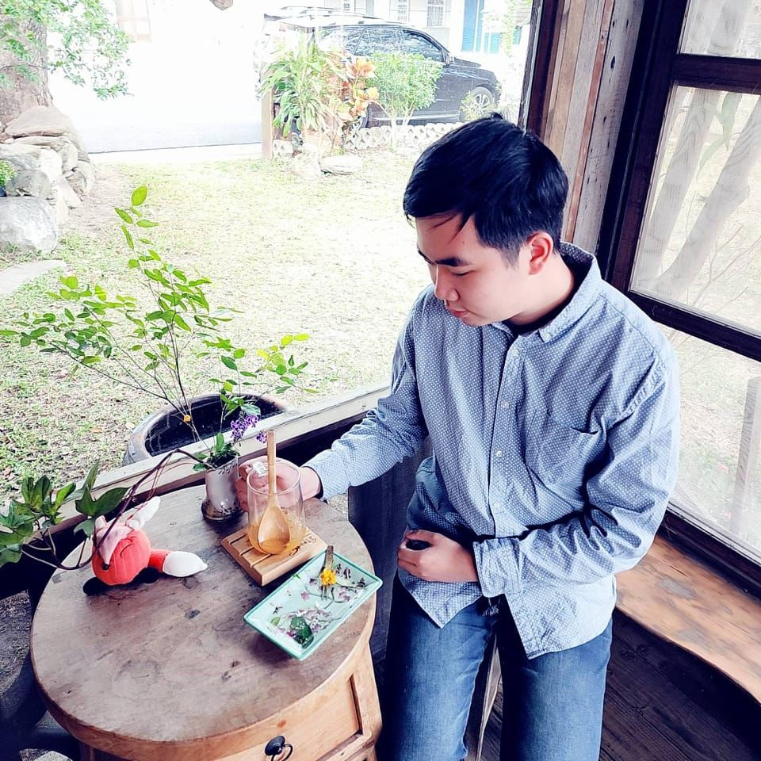

小邊(邊千凱)

16歲，提筆寫詩，完成第一本詩集。
19歲，創作奇幻穿越小說，開始構思奇癒世界觀。
22歲，於大學校內舉辦第一場師生作品聯展。
25歲，生平第一場個人創作分享會(人間行旅)，奇癒旅程網站正式上線。
座右銘
功過自有世人評，紅塵逍遙走一遭。
《奇癒宇宙宣言》
奇癒，不只是一部小說。
它是一個由文字開始，向聲音、圖像、音樂、影像與想像延伸的世界。
這裡有故事，也有角色；
有冒險，也有失落；
有夢想，也有傷痕。
我希望有一天，你偶然來到這裡。
也許你只是看見一張插畫，
聽見一段旋律，
讀到一句台詞，
或者只是因為某個角色的名字，而停留片刻。
然後，你開始讀一個故事。
在故事裡，你遇見了另一個人；
在另一個人的命運裡，看見了自己的影子。
於是，你知道：
原來這個世界上，
也有人曾經孤獨，
曾經迷惘，
曾經失去方向，
卻仍然願意尋找一束光。
這就是我想創造奇癒的原因。
我不奢求它立刻偉大，
也不奢求它被所有人看見。
我只願它慢慢成長。
一個角色，
一個故事，
一幅畫，
一首歌，
一段聲音，
一頁文字。
一年又一年。
直到有一天，
回頭看時，
才發現原來那些微小的創作，
早已彼此連結，
形成了一整片星空。
如果有人在這片星空裡，
找到一顆屬於自己的星星，
那麼，
奇癒便已經抵達了它應該抵達的地方。
💬 讀者留言交流區